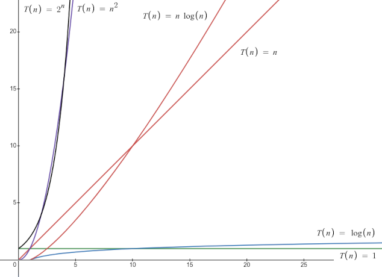

This lecture covers asymptotic analysis and "Big O" notation, which enables us to quantitatively and qualitatively analyze algorithms for their speed.
- Readings: Text 10.2
- Lecture quiz on Canvas
Lecture Video
Prezi
Here's the Prezi from today's lecture:
Contents
1. Preliminaries: DON'T PANIC!
2. Preliminaries: A Broken Ideas for Runtime Analysis
3. Toward Big-O: Another Broken Approach
4. Introduction to Order Analysis (Big-O)
5. Examples and Summary of Big-O Terminology
6. Runtime Analysis Vignettes (Code)
7. (Supplementary) Behind the Scenes with v.add(value)
8. (Supplementary) Behind the Scenes with v.insert(index, value)
9. Derivation of Key Summation Identity
10. Exploring Linear Growth
11. Runtime Estimation with Linear Growth
12. Runtime Estimation with Quadratic Growth
13. Big-O Runtime Comparisons
14. Runtime Estimation with Exponential Growth
15. Logarithmic Growth
16. The Sheer Awesomeness of Logarithmic Runtimes
17. What's next?
18. Practice Problems
Preliminaries: DON'T PANIC!
If today's derivation of the following formula:
... or the analysis of the following O(log n) function:
int weirdness(int n)
{
int j = n;
int result = 0;
while (j > 0)
{
j /= 2;
result++;
}
return result;
}
... went a bit fast for you today,
DON'T PANIC
My expectation is that many people will have to revisit those explanations to really unpack and absorb what's going on there. If you felt a bit mystified by those, don't feel bad, and don't give up! It's normal to have to put some extra time into studying certain concepts outside of lecture. (That's one of the reasons this is a 5-unit course!)
If you're pressed for time and those derivations are looking ultra indimidating, focus for now on the key take-aways for each of those examples (which are listed below in today's notes, but which I'll summarize here):
- (Key Take-Away!) The summation 1 + 2 + 3 + ... + n comes up all the time in our field. Ideally, it's good to know the closed form for that expression (the formula given above). Ultra-ideally, it's great to know how it's derived. Perhaps more realistically, though, I just want everyone to know when they see the sum of 1 through n that it's O(n2).
- (Key Take-Away!) The key thing to take away from the weirdness() function above is the pattern: if you repeatedly divide your input in half (and you only incur an O(1) operation each time you do so), that is a key pattern that indicates you have an overall runtime of O(log n).
Preliminaries: A Broken Ideas for Runtime Analysis
We started today's lecture with a discussion of the limitations of using actual clock time to compare the runtime efficiency of two programs that solve the same problem. This has all kinds of pitfalls, including (a) the need for both implementations to be run on the same machine, (b) the need to ensure the test cases used when timing those programs provide a fair basis for comparison, (c) the possibility that the results of the comparison might vary if the timing experiments were performed with different processor architectures, and (d) the fact that runtime measurements could be subject to interference from other processes running on the host machine.
Toward Big-O: Another Broken Approach
We then considered the merits of a more architecture-independent approach: What if we measured the runtime of a function in terms of the number of operations executed instead of the number of seconds (clock time) required for it to run? To do that, we could count the following:
- assignment statements
- comparison operations
- arithmetic operations
- cost of function calls (in terms of the operations above)
For example:
Total runtime: 4n + 4 operations
That might seem on its surface like a fair and reasonable approach to runtime analysis, but it has some significant pitfalls, including:
- It's easy to miss operations! For example, in the code above, the i++ and sum += operations are both doing an assignment and an arithmetic operation, so they should have been counted twice. The v[i] read has a hidden multiplication operation related to memory addresses. The return statement actually moves a value into a register in memory and might have to count as an assignment statement, as well. This is getting tedious and unruly, and the whole process of counting operations seems susceptible to human error.
- Even if we could agree on what counted as a single "operation" and ensure that we always counted them accurately (good luck with that), that operation count wouldn't necessarily give us an accurate view of what happens after the program is compiled. Different instructions take different numbers of processor cycles to complete, and that can vary depending on one's processor architecture. So giving equal weight to all the operations we count in our code doesn't seem like the right approach, but there's no unified standard we can use to predict processor cycles. And even if there were, a compiler might optimize and perturb our code in unexpected ways anyway.
So, counting operations like that is a fool's errand. It's incredibly tedious, and the numbers are ultimately pretty meaningless.
Introduction to Order Analysis (Big-O)
All of this led into our main topic for the day: runtime analysis with Big-O (sometimes written as "big-oh"). We'll use Big-O for the rest of the semester as we analyze the runtime complexity -- and eventually even space (i.e., memory) complexity -- of the code we write.
Here's a general outline of the process we follow to find a function's Big-O runtime:
- Assume the input is arbitrarily huge (whether it's an integer you're passing to the function, a vector length, or what-have-you).
- Find the statement (or statements) executed the most in that function, and count how many times they occur. This is an architecture-independent approximation of the runtime.
- Drop any constant coefficients from your approximation and take the highest-order term as the Big-O runtime.
We saw that Big-O frees us from the tedium of attempting to precisely count instructions (which is ultimately a fool's errand anyway) and allows us to hone in on -- and efficiently communicate to others -- the main idea behind how rapidly a function's runtime grows as its input(s) grow.
Examples and Summary of Big-O Terminology
Here are the Big-O examples we saw next, along with some important terminology:
| Expression | Big-O Runtime | Alternative Phrasing |
|---|---|---|
| T(n) = n + 4n3 + 2n2 + 1055 | O(n3) | cubic (polynomial) |
| T(n) = (1/6)n2 + 1000n | O(n2) | quadratic (polynomial) |
| T(n) = log n + n | O(n) | linear |
| T(n) = n log n + n | O(n log n) | linearithmic |
| T(n) = log n + 40 | O(log n) | logarithmic |
| T(n) = 6n + 2n | O(2n) | exponential |
| T(n) = 5 | O(1) | constant |
We read those Big-O expressions aloud as follows:
- "Big-O n-squared" or "order n-squared"
- "Big-O n" or "order n"
- "Big-O log n" or "order log n"
- ... and so on
Note that if the runtime of a function is constant (say, for example, it always does exactly 10 steps of work), we don't write O(10) for the Big-O runtime; we just write O(1). O(1) means "constant time."
Runtime Analysis Vignettes (Code)
This section includes several examples of code from today's lecture and their corresponding runtimes. For additional explanation of each of these examples, see today's lecture video starting at timestamp 23:15.
Throughout this section, I use n to indicate vector size. It's best practice to formally define any variables that appear in a Big-O expression if they do not already appear directly in the function whose runtime is being analyzed.
Example #1
void swap(int& a, int& b)
{
int temp = a;
a = b;
b = temp;
}
Runtime: O(1)
Example #2
int vectorSum(Vector<int> v)
{
int sum = 0;
for (int i = 0; i < v.size(); i++)
{
sum += v[i];
}
return sum;
}
Runtime: O(n)
Example #3
int doubleVectorSum(Vector<int> v)
{
int sum = 0;
for (int i = 0; i < v.size(); i++)
{
sum += v[i];
}
for (int i = 0; i < v.size(); i++)
{
sum += v[i];
}
return sum;
}
Runtime: O(n)
(Key Take-Away!) Even though the runtime for Example #3 is approximately double that of Example #2, both of them have a runtime of O(n). This highlights the fact that Big-O analysis doesn't necessarily give a direct comparison of the performance of two functions; rather, it focuses on the kind of growth a runtime incurs as a function's input grows.
Example #4
int nestedSum(Vector<int> v)
{
int sum = 0;
for (int i = 0; i < v.size(); i++)
{
// This inner loop, considered in isolation, would be said to have an O(n)
// runtime. We're hitting this inner loop n times, though, giving us a total
// runtime of O(n^2) for this function.
for (int j = 0; j < v.size(); j++)
{
sum += v[i];
}
}
return sum;
}
Runtime: O(n2)
Note: The inner loop above, considered in isolation, would be said to have an O(n) runtime. We're hitting that inner loop n times, though, giving us a total runtime of O(n2) for this function. We also looked at this runtime additively: the inner loop does n iterations when i = 0, another n when i = 1, and so on, giving us T(n) = n + n + ... + n = n(n) = n2 iterations total.
Example #5
int vectorSize(Vector<int> v)
{
// With vectors, size() is an O(1) function call. The number of elements in a
// vector is stored in a variable behind the scenes, and size() just returns
// that variable.
return v.size();
}
Runtime: O(n)
(Key Take-Away!) There are two key take-aways from this example: (1) Firstly, we're getting into a portion of the course where we need to know something about the runtimes of functions we've been calling from various libraries -- whether standard C++ libraries or the Stanford libraries. Note that the Stanford Library docs contain information about runtimes for all the functions listed there. (2) Secondly, this is a pass-by-value function. That means that we create a copy of the vector when calling it, and that takes O(n) time. That's actually the dominant operation here -- not the call to v.size().
Example #6
int vectorSizeRevised(Vector<int>& v)
{
return v.size();
}
Runtime: O(1)
Note: Passing the vector by reference is an O(1) operation, which results in a dramatic improvement in the runtime compared to Example #5.
Example #7
Vector<int> vectorAdd(int n)
{
Vector<int> v;
for (int i = 0; i < n; i++)
{
v.add(i);
}
return v;
}
Runtime: O(n)
Note: The expected runtime for v.add(i) is O(1), giving us a total runtime of O(n) for this function.
Example #8
Vector<int> vectorInsert(int n)
{
Vector<int> v;
for (int i = 0; i < n; i++)
{
v.insert(0, i);
}
return v;
}
Runtime: O(n2)
Note: The expected runtime for v.insert(0, i) is O(i), because on the ith iteration of the loop, we have i elements that need to be scooched over in the vector one-by-one. If we add up the number of elements we are writing in the vector at each iteration, we get: 1 + 2 + 3 + ... + n. In today's lecture, I derived the closed form for that expression. That is in today's lecture video at 29:10, and I have included a write-up about that in the notes below, as well (see the section titled, "Derivation of Key Summation Identity").
(Supplementary) Behind the Scenes with v.add(value)
This is somewhat supplementary information. You don't need to know this right now, but reading this section could help you develop and maintain a consistent view of what's happening behind the scenes with vector runtimes, which will be important later this quarter.
In the section above, I mention that v.add(value) has an expected runtime of O(1). That is also the runtime listed for that function in the Stanford Vector docs.
However, a call to v.add(value) could actually be an O(n) operation in somewhat rare cases, because the underlying data structure used to implement the vector might be forced to expand to accommodate a new element, and that is an O(n) operation because it involves copying all n elements into that newly expanded underlying data structure. This happens rarely, though, and the average runtime for inserting at the end of a vector winds up being O(1) because of how rare that expansion is.
We'll explore that later in the quarter when we discuss how the vector and other ADTs are implemented. In the meantime, I wanted to provide a bit of context for that O(1) runtime so that you aren't building your understanding of these runtimes on flawed notions that will later need to be unlearned and rewired.
(Supplementary) Behind the Scenes with v.insert(index, value)
This is somewhat supplementary information. The same disclaimer applies here as in the section above.
We have also seen that the runtime of v.insert(index, value) can be as bad as O(n). That happens when we insert a value at the beginning of our vector, because all n elements in the vector need to scooch over to make room for the new one. That also happens if we insert into the middle of a vector with n elements. In that case, we have to scooch over n/2 elements, which is O(n). (There, I'm rewriting n/2 in my head as (1/2)n and then dropping the constant coefficient of (1/2) to get the big-oh notation.)
But if we insert immediately after the last element in a vector, we only have to do one write operation (no elements get scooched over!), which is almost always going to be an O(1) operation. So, I would actually expect the following function to have an O(n) runtime because we're doing insertion at the end of the vector, which is fast:
#include <iostream>
#include "console.h"
#include "SimpleTest.h"
#include "vector.h"
using namespace std;
Vector<int> insertAtEnd(int n)
{
Vector<int> v;
for (int i = 0; i < n; i++)
{
// INSERT AT END OF VECTOR
v.insert(i, i);
}
return v;
}
PROVIDED_TEST("runtime comparison")
{
int size;
size = 20000;
TIME_OPERATION(size, insertAtEnd(size));
size = 40000;
TIME_OPERATION(size, insertAtEnd(size));
size = 80000;
TIME_OPERATION(size, insertAtEnd(size));
size = 160000;
TIME_OPERATION(size, insertAtEnd(size));
size = 320000;
TIME_OPERATION(size, insertAtEnd(size));
size = 640000;
TIME_OPERATION(size, insertAtEnd(size));
}
int main()
{
runSimpleTests(ALL_TESTS);
return 0;
}
Here are the runtimes I got from those tests. Notice that the runtime is approximately doubling as we double the input size, which is indicative of a linear runtime:
size = 20000: 0.002 secs
size = 40000: 0.003 secs
size = 80000: 0.005 secs
size = 160000: 0.012 secs
size = 320000: 0.024 secs
size = 640000: 0.046 secs
(Key Take-Away!) vector.insert(index, value) isn't necessarily always O(n). It is more expensive to insert at the beginning of a vector than at the end. The total number of writes is generally vector.size() - index + 1.
Note, however, that inserting at the very end of a vector could actually be an O(n) operation in somewhat rare cases, because the underlying data structure used to implement the vector might be forced to expand to accommodate a new element, in which case all n vector elements would need to be copied into that new, expanded data structure -- an O(n) operation. This happens rarely, though, and the average runtime for inserting at the end of a vector winds up being O(1) because of how rare that expansion is. We'll explore how that works (and how we keep these expansions rare) later in the quarter when we discuss how these ADTs are implemented.
Derivation of Key Summation Identity
In the following (which is Example #8 from above), we saw that the inner loop was doing 1 + 2 + 3 + ... + n write operations each time we called the function:
Runtime: O(n2)
Vector<int> vectorInsert(int n)
{
Vector<int> v;
for (int i = 0; i < n; i++)
{
v.insert(0, i);
}
return v;
}
To derive the closed form for that expression, I listed the first and last few terms and set them equal to S (which stands for "sum" and which is the term I want to solve for, ultimately):
I then used the commutative property of addition to reverse the order of the terms on the right-hand side:
Note that if we add the left-hand side of both equations above, that should give us the same result as adding the right-hand side of those equations. If we do that, we get the following:
If we count up the number of (n + 1) terms on the right-hand side of that equation, we see that we have n of them. Thus, we can simplify the right-hand side like so:
We then solve for S by dividing both sides by 2:
Recall that S was used to represent our sum, so we now have our identity:
(Key Take-Away!) The summation 1 + 2 + 3 + ... + n comes up all the time in our field. Ideally, it's good to know the closed form for that expression (the formula given above). Ultra-ideally, it's great to know how it's derived. Perhaps more realistically, though, I just want everyone to know when they see the sum of 1 through n that it's O(n2).
Exploring Linear Growth
We then examined the following function:
int vectorMax(Vector<int>& v)
{
// The following initialization to -1 is safe if we assume the vector contains
// only non-negative integers.
int max = -1;
for (int i = 0; i < v.size(); i++)
{
if (v[i] > max)
{
max = v[i];
}
}
return max;
}
The runtime for vectorMax() is O(n), where n is the length of the vector we pass to it.
The following chart shows actual runtimes for running this function with vectors of various sizes:
This chart and experimental data are courtesy of my awesome colleague, Chris Gregg.
The blue line above was derived by calling the function with vectors where the maximum value was at index zero. In that case, the if-condition in the code is true only once per function call (when i = 0), and so we only write to max once within that loop.
The red line above was derived by calling the function with a vector where each element was greater than the one before it. In that case, the if-condition always evaluates to true, and we write to max at every iteration of the loop.
The latter scenario (writing to max at every iteration) is necessarily slower than the former (only writing to max once), but we see that both scenarios still lead to O(n) runtimes.
(Key Take-Away!) We see that in both cases, doubling the size of the input doubles the runtime. This is a key characteristic of linear runtimes.
Runtime Estimation with Linear Growth
We then examined the following estimation problem:
Suppose we have an O(n) function that takes 100 ms to run for an input of size n = 50. How long would we expect this function to take for an input of size n = 100?
Since this is an O(n) function, the growth factor for our inputs matches the growth factor for our runtimes: 100/50 = 2x increase (in both our input size and our runtime). So, for n = 100, we expect the runtime to be 2 * 100 ms = 200 ms.
Runtime Estimation with Quadratic Growth
We then examined a similar problem, but with quadratic growth instead of linear:
Suppose we have an O(n2) function that takes 100 ms to run for an input of size n = 50. How long would we expect this function to take for an input of size n = 100?
Since the runtime is O(n2), we do not expect the growth factor for our inputs to match the growth factor for our runtime. The runtime growth factor is given by the ratio of the squared input sizes: 1002/502 = 4x increase in runtime. So, for n = 100, we expect the runtime to be 4 * 100 ms = 400 ms.
(Key Take-Away!) That might not seem like a drastic increase, but consider what happens if we bump our input size up to 1,000,000 (which isn't even all that huge of a number). Our growth factor is 1,000,0002/502 = 400,000,000x increase in runtime. So, for n = 1,000,000, we expect the runtime to be 400,000,000 * 100 ms = 40,000,000,000 ms = 40,000,000 sec = 463 days!
(Important note!) This isn't to say that an O(n2) function will always take 463 days to run on an input of size n = 1,000,000. That only holds if the runtime for n = 50 was 100 ms to begin with. It's entirely possible to have an O(n2) function whose runtime when n = 50 is so negligible as to be practically immeasurable. I actually timed an O(n2) function today that had a runtime of just 14 ms for an input of size n = 10,000. For an input of size n = 1,000,000, we would expect that function to have a runtime of just 140,000 ms = 140 sec = 2.33 minutes. (An input of size n = 100,000,000, however, would take this function 16.2 days to process. That's actually pretty concerning.) (Okay, I'll stop now.)
Big-O Runtime Comparisons
It gets even worse from there. Here's a fancy graph that shows how quickly cubic runtimes grow compared to quadratic runtimes:
This chart and experimental data are courtesy of my awesome colleague, Chris Gregg.
I also showed the following chart in class, which gives a lovely, colorful representation of the relative growth rates of common Big-O runtimes:

Take that chart with a grain of salt, though. While it shows the relative ordering of those runtimes and loosely conveys the shapes of those curves, it does not accurately represent the vast disparity between some of them or the immense closeness of others. For example, if you were to go to an online graphing calculator, have it graph all of the following functions:
- T(n) = 1
- T(n) = log(n)
- T(n) = n
- T(n) = n log(n)
- T(n) = n^2
- T(n) = 2^n
... and then zoom out just a bit, you would see very little distinction between the two slowest-growing functions (constant and logarithmic), as well as very little distinction between the two fastest-growing functions (n2 and 2n):

That's not to say that there's no appreciable difference between O(n2) and O(2n) runtimes. (There certainly is!) It's just that they both have the potential to become very unruly very quickly as input size increases.
Runtime Estimation with Exponential Growth
We then used our runtime projection technique to examine how terrible exponential runtimes are:
Suppose we have an O(2n) function that takes 100 ms to run for an input of size n = 5. How long would we expect this function to take for an input of size n = 30?
Since the runtime is O(2n), runtime growth factor is given by 230/25 = 225 = 33,554,432. That corresponds to a 33.5 million times increase in runtime. So, for n = 30, we expect the runtime to be 33,554,432 * 100 ms = 3,355,443,200 ms = 3,355,443.2 sec = 38.84 days. That's pretty wild for such a tiny value of n.
We have already seen an exponential runtime in class, too: the recursive coin flip function from Wednesday's lecture on recursion! Every time we bump up the input to that function by 1, we double the number of solutions it produces. That is the key pattern that suggest an O(2n) runtime.
We saw another example of exponential growth at the very end of class today with the Traveling Salesperson Problem (TSP):
The best known solution to TSP is O(n22n). For the sake of simplicity, suppose we could find a O(2n) solution to the problem. If it takes us approximately 4 days to compute the solution for 50 cities, it would take approximately 17 days to solve the problem with just 52 cities, and it would take approximately 194 years (!!) to solve with 64 cities.
(Key Take-Away!) Exponential runtimes are not friendly. A small bump up in the input size, even when dealing with seemingly trivial numbers like n = 30 or 64, can lead to huge explosions in runtime.
(Key Take-Away!) If bumping your input up by 1 causes your runtime to double, that's a key indication that you have an O(2n) runtime.
Logarithmic Growth
We then dissected the following function and saw that it had a logarithmic runtime:
int weirdness(int n)
{
int j = n;
int result = 0;
while (j > 0)
{
j /= 2;
result++;
}
return result;
}
(Key Take-Away!) For the formal analysis of this function, I defer to today's Prezi and the recorded lecture. The key take-away here is that if you repeatedly divide your input in half (and you only incur an O(1) operation each time you do so), that is a key pattern that indicates you have an overall runtime of O(log n).
The Sheer Awesomeness of Logarithmic Runtimes
Logarithmic runtimes are astonishingly fast. Check out this chart:
| n | log2n |
|---|---|
| 8 | 3 |
| 1,024 | 10 |
| 65,536 | 16 |
| 1,048,576 | 20 |
| 33,554,432 | 25 |
| 1,073,741,824 | 30 |
Here's a fact I love to throw around: 230 is approximately 1 billion (1x109). That means that log2(1x109) is approximately 30. With that in mind, please take a moment to reflect on how awesomely fast a function with logarithmic runtime is. Given an input of size 1 billion, a function whose runtime is approximately log2(n) can finish in just 30 steps!! (Give or take some multiplicative constant on that 30. This is Big-O, after all.) That's not even in the same ballpark as an O(n) function, which would take approximately a billion steps (again, give or take a multiplicative constant) to execute on the same input. That's some mind-blowing stuff.
(Key Take-Away!) In that respect, I would encourage you not to look at O(log n) runtimes as somehow being "half way" between O(1) and O(n) runtimes, which I think is a common misconception among people when they are first introduced to Big-O analysis. Rather, O(log n) runtimes, relatively speaking, are incredibly close O(1).
What's next?
On Monday, we will return to our discussion of recursion. We will spend the entire week exploring more and more advanced recursive examples. We will also continue to discuss Big-O throughout, we will start to get a taste of clever algorithm design.
Practice Problems
Be sure to revisit the sections labeled "(Key Take-Away!)" in today's notes to ensure you have a firm grasp on all the main concepts from today's lecture. You might also find the sections labeled "Supplementary" to be helpful in solidifying your understanding of some of this material.
Beyond that, for additional reinforcement of today's topics, I defer to today's lecture quiz, next week's section problems, and the textbook, all of which provide an abundance of examples and novel problems to play with.